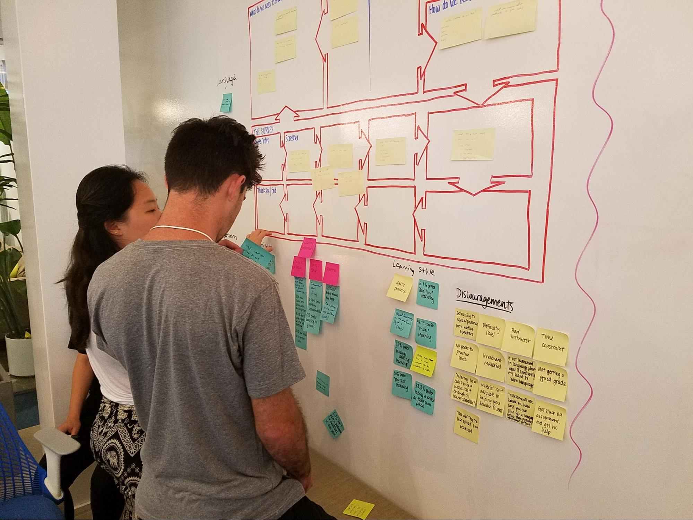

Services
User Research (UX), Information Architecture (IA), User Interface Design (UI), Interaction Design (IxD), Rapid Prototyping, User Testing
Timeline
3 weeks
Tools
Sketch, Google Forms, InVision
Deliverables
User Research, Interaction Design, Visual Design, Prototype
In our second week of our UX/UI Design course we learned about Design Thinking, a human-centered methodology for solving problems and discovering new opportunities by arranging desirable solutions for users.
Smart people was a group project as part of the Ironhack cohort. In my team, I was responsible for the user experience strategy, research, and design .
The Customer
Smart People Inc. is an educational company that was started in 2014. They currently offer in-person language courses (English for Spanish speakers and vice versa) for kids from 12 to 18 years of age. They have found out that many students are unable to attend the summer camp due to the cost or lack of time, but still want to access the curriculum.
Project Description
The Company is preparing to launch an online version of their summer camp in 2018. They are seeking to turn the in-person classroom experience into a 100% digital version that will be interactive, fun and cost less.
The Challenge
Their vision is to deliver content, manage assignments, conduct assessments, and build community through a single, easy-to-use platform. They’re seeking help to design the first iteration of the student interface for this platform.
Features and Scope
Smart People's platform will allow students to complete courses at their own pace through learning modules that are based on the current lessons. Every learning module will contain all relevant content, exercises, and assessments. Students can begin, pause, and complete learning modules at any time.
Project Requirements:
- Students need to be able to interact with the curriculum in an engaging way
- Students need to be able to seek help when they are stuck
- Students need to be able to test their knowledge and skills
- Students need to be able to track their progress
Users
12-18 year-old
Spanish and English speakers
The Research
Research for Smart People was essential to aligning the product vision with solutions that improved the user experience overall.
Lean Survey Canvas Strategy
In order to dig into user’s behaviour to find thoughts and feelings we started the research process by creating a Lean Survey Canvas. This approach took us through a planning stage before writing questions for our survey.
User Surveys
We created a brief survey using Google Forms which allowed us to share it on social media to reach the audience we wanted.
User Interviews
Interviewing children from 12 to 18 years became a challenge, mainly because they are not walking alone on the streets.
Affinity Diagram
At this point, we had gathered user research and needed to synthesize it in order to turn data into actionable information. Using sticky notes we dissected this data in order to find ideas, patterns and then we categorized it to create an Affinity Diagram.
Pain Points
Based on the user research the following pain-points were identified
Course Pace
- ‘Not getting a good grade in a language class, since assessments are based on how fast you can pick up a language, rather than personal improvement and effort.’
Lack of Feedback
- “When i tried to learn online I would get stuck on a certain assignment and did not have help from the service or anyone to move on. I quit because I couldn't get past that point”
Time
- “Difficult or not enough time”
Mind Map
As a group we brainstormed and created this mind map which helped us visualize and create new ideas for our product, an online learning environment.

User Personas
We then created User Personas, archetypes derived from the patterns in our research. We used these personas to inform the product design.
Problem Statements
In order to capture and address the most important findings from our user research we created two problem statements .
- 13-year-old Emma, a daughter of two immigrants from the Dominican Republic. Emma needs a lot of help with her English because she is struggling with classes at school.
- 18 year-old Josh, the oldest of three siblings, needs to brush up on his Spanish because he is going to embark on a mission trip to Yucatan, Mexico after the summer.
Empathy map
We created empathy maps to better understand our target audience and their needs so that we can make decisions throughout our design process based on our users.
Storyboard
Storyboards are a way to visualize our users process in order to get information, encouraging memorability, empathy, and engagement.
Ideate
Once we defined the problem and had a clear idea of who our users were, (their frustration, goals, and motivations), we used a series of tools and exercises that helped us generate ideas on how to design a product that would help our users accomplish their goals.
Crazy 8s.
Turning our learnings into an opportunity for design.

User stories
User stories are statements that identify our users and describe their core needs.

Concept Sketches and Testing
We sketched and tested our ideas before building them to validate every possible scenario.
Information architecture
We used information architecture to decide the best way to group our content across the app.
User flows
We show the paths our user can take to complete tasks when interacting with our product.

Card Sorting
We used card sorting to detect how users understand and expect to see the content organized on our product.

Site Map
Showing the relationships between pages on our platform helped us define the goal and purpose of our project.

Interaction Design
It was important to understand how our users would interact with our platform.
Mid-Fidelity Wireframes
We defined and planned the information hierarchy of our app design.


Progress tracker

Testing Again!
Reaching out to users to gather insight on the usability of our product helped us to fix problems on an early stage, before creating a high fidelity wireframe.
Visual Design
Moodboard
We created a moodboard to gather a bunch of ideas that would get us a better sense of how our website should look and feel.
Style Tile
This is a more defined version of our moodboard, including color palette, font style, and an overall sense of the textures and layouts we wanted to use in our platform.